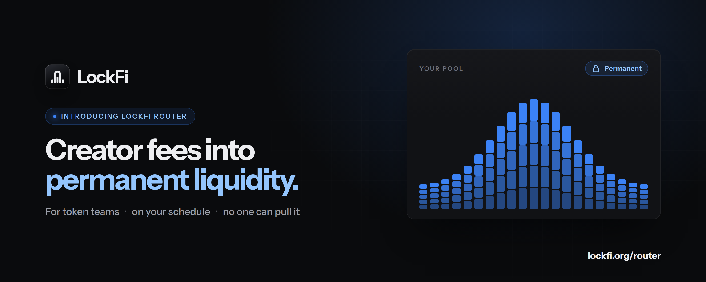
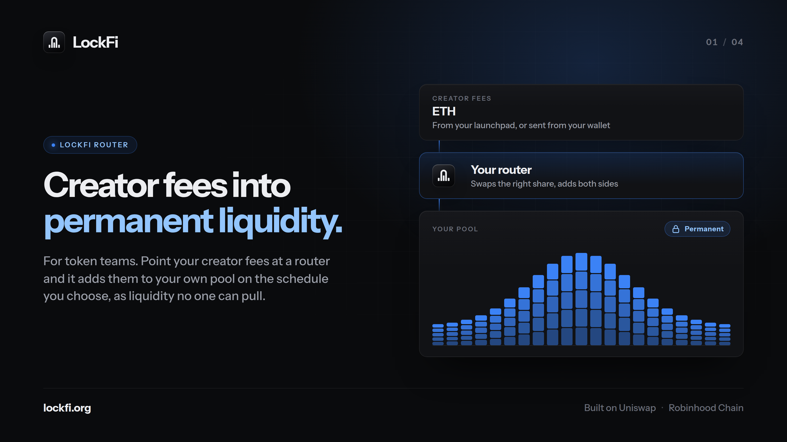
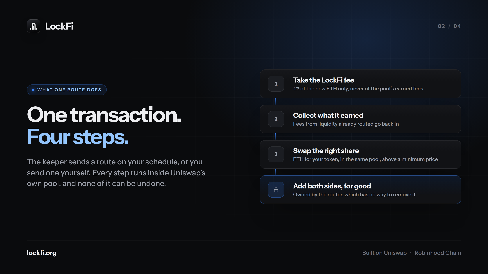
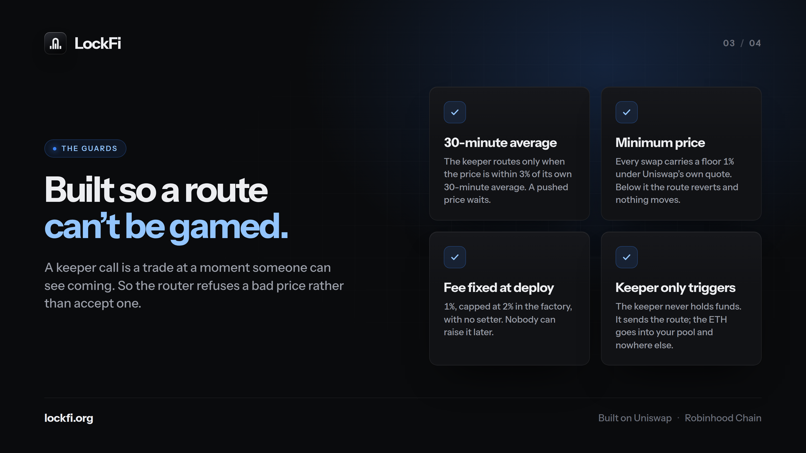
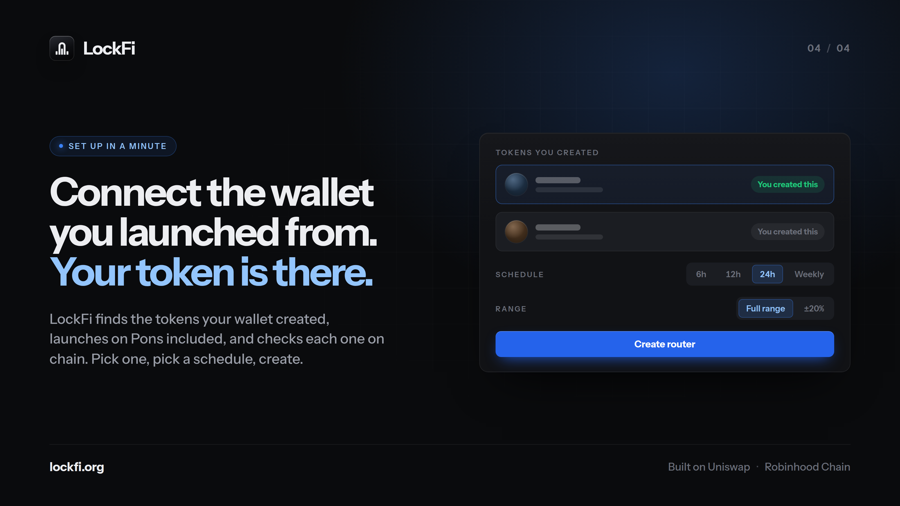

Introducing LockFi Router: Turn Your Creator Fees Into Permanent Liquidity
Every token launched on Robinhood Chain earns its team something: creator fees, paid in ETH, on every trade.
Most of that ETH goes one of two ways. It sits in a wallet. Or it gets sold, and the chart shows it. Holders watch the dev wallet, and every transfer out of it reads like the start of an exit.
There is a third way, and it is the one holders actually want to see: put the fees back into the token's own pool, where they become liquidity. Deeper liquidity means lower slippage for every trader, a market that can take bigger orders, and a project that visibly reinvests in itself.
The problem is that doing this by hand is tedious, easy to get wrong, and proves nothing. You can add liquidity today and pull it out tomorrow, and holders know that.
LockFi Router fixes both.
What LockFi Router is
LockFi Router is a contract that turns your creator fees into liquidity for your own pool, automatically, on a schedule you choose, and permanently.
- Automatic. ETH that arrives at your router is added to your pool on schedule. You do not need to be online.
- Your pool. It goes into the Uniswap pool your token already trades in, on Robinhood Chain. Nothing is bridged or wrapped into anything new.
- Permanent. The router has no function that removes liquidity. Not for you, not for LockFi, not for anyone. Once a route lands, that depth stays in the pool.
That last point is the whole idea. Liquidity a team can pull is a promise. Liquidity nobody can pull is a fact, and anyone can check it on chain.

Insert image here: r1-introducing.pngHow a route works
Each router is tied to one token and one pool, chosen when it is created and fixed after that. When ETH is waiting, a route does four things in a single transaction:
1. Takes the LockFi fee. 1% of the new ETH that arrived since the last route. Only the new ETH: the fees your routed liquidity earns in the pool are never charged.
2. Collects what the liquidity has earned. Liquidity earns trading fees like any other position. The router collects them and puts them back in, so the depth compounds.
3. Swaps the right share. A pool needs both sides. The router swaps the exact amount of ETH for your token that leaves both sides balanced, in the same pool, and refuses any price below a minimum.
4. Adds both sides as liquidity, for good. The liquidity is owned by the router contract itself, at the pool. There is no NFT to transfer and no call that can take it back out.
The LockFi keeper sends the route on your schedule. You can also route yourself, at any time, from the router page.

Insert image here: r2-route.pngBuilt so a route cannot be gamed
A scheduled trade is a trade someone can see coming. So the router and its keeper are built to refuse a bad price rather than accept one:
- A 30-minute average. The keeper routes only when the pool's price is within 3% of its own 30-minute average. If someone pushes the price right before a route, the route waits.
- A minimum price on every swap. Each route carries a floor 1% under Uniswap's own quote. If the price is worse when the transaction lands, it reverts and nothing moves.
- A fee that cannot change. The LockFi fee is 1%, set when the factory is deployed, capped at 2% in the code, and there is no function to raise it.
- A keeper that only triggers. The keeper never holds your ETH. It sends the transaction; the ETH goes from the router into your pool and nowhere else.
- Hooks are bounded. Some Uniswap v4 pools run custom code called hooks. The router refuses to pay a hook more than the route planned. The worst a hook can do is make a route fail, and a failed route moves nothing.

Insert image here: r3-guards.pngSet up in a minute
1. Connect the wallet you launched from. LockFi finds the tokens your wallet created, including launches on Pons, and checks each one on chain: the wallet that sent the transaction that created the token is its creator. You can also paste any token address.
2. Pick the pool. LockFi finds your token's pools directly on chain, so a token launched today works even before any board lists it. Only pools with ETH on the other side are offered, and a pool with a hook is marked.
3. Pick a schedule and a range. Every 6 hours, 12 hours, 24 hours or weekly. Full range, or ±20% around the price to concentrate the depth where trading happens.
4. Create the router, then point your fees at it. If your launchpad lets you set where creator fees are paid, set it to the router's address. If not, send ETH to the router from your wallet whenever you like. Either way, the router takes it from there.

Insert image here: r4-your-token.pngA router holders can recognise
Anyone can create a router for any token. So every router on the page is marked as token creator or not the creator, based on the wallet that created the token, checked on chain. Holders can tell an official router from one a stranger made in one glance.
Every router's figures are read straight from the contract: the ETH routed so far, the tokens added, the fees paid, the next scheduled route. Nothing on that page is an estimate.
What you keep control of
The router is permanent where it matters and flexible where it should be:
- Route now whenever you want, without waiting for the schedule.
- Pause future routes at any time.
- Withdraw what has not been routed yet, while paused. ETH that is still waiting is yours.
- Hand the router to another wallet if the team changes.
What you cannot do is take back liquidity that has already been routed. That is the point.
The risks, in plain words
- Permanent means permanent. Routed liquidity cannot be recovered by anyone, including you. Only route what you intend to give to the pool for good.
- The contract is not externally audited. It is tested against Uniswap's own contracts on a local chain, covering every route, fee and guard described here, but that is not an audit. Start with a small amount.
- Liquidity is not a price floor. Deeper liquidity makes trading smoother. It does not stop a token's price from falling, and it is not a promise of any return.
- Hooks and launchpads vary. A pool with a hook can refuse routes. Some launchpads may not let you set a contract as your fee recipient, in which case you send the ETH yourself.
What it costs
1% of the new ETH each route adds. Nothing on the fees your liquidity earns. Nothing to create a router beyond the network's gas.
Get started
- Go to lockfi.org/router
- Connect the wallet you launched your token from
- Create a router, point your creator fees at it, and start small.
Follow @lockfiorg for updates.
Creator fees in. Permanent liquidity out.
This article is for information only and is not financial advice. The LockFi Router contract has not been externally audited, and liquidity routed through it cannot be withdrawn by anyone.